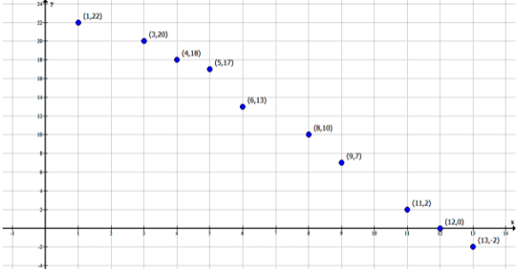

Videoaula
A correlação entre duas variáveis pode ser estudada de diversas maneiras e possuímos várias ferramentas que nos auxiliam a determinar se tal relação realmente existe. Vamos abordar os diagramas de dispersão, o coeficiente de correlação linear de Pearson e a equação de regressão linear simples entre duas variáveis nesta unidade. Nesta videoaula você poderá conhecer um pouco mais sobre esses três conceitos e ainda acompanhar alguns exemplos simples de cada um deles.
Teoria na Prática
Calculando o Coeficiente de Correlação Linear de Pearson
A construção de mais colunas em uma determinada tabela com os valores das observáveis pode ser uma forma mais organizada de se determinar o coeficiente de correlação linear de Pearson. Neste vídeo, você poderá acompanhar a construção de colunas extras em uma tabela, para facilitar o cálculo desse coeficiente tão importante.
Existem diversos softwares matemáticos e estatísticos que calculam diversas medidas de posição, de dispersão e até mesmo realizam análises muito ricas a partir de dados simples estruturados em tabelas. É importante conhecer como são calculados tais elementos e, por meio da adição de mais colunas em uma tabela, podemos simplificar e organizar nossos cálculos para determinar o coeficiente de correlação linear de Pearson.
Acompanhe, no vídeo a seguir, como você pode organizar sua tabela para obter o coeficiente de Pearson a partir dos dados apresentados.
CORRELAÇÃO de Pearson - Como calcular o coeficiente de correlação de Pearson. Só números. Disponível em: https://www.youtube.com/watch?v=oxypFVGVUfg. Acesso em: 18 set. 2021.
A partir do vídeo, trabalhe com a seguinte tabela, completando as células que estão em branco e, por fim, calculando o coeficiente de correlação de Pearson para esses dados.
| $x$ | $y$ | $x-\bar{x}$ | $y-\bar{y}$ | $(x-\bar{x})^{2}$ | $(y-\bar{y})^{2}$ | $(x-\bar{x}) \cdot(y-\bar{y})$ |
| 2 | 2 | |||||
| 7 | 20 | |||||
| 6 | 16 | |||||
| 4 | 10 | |||||
| 6 | 17 |
Qual é o valor do coeficiente de correlação linear de Pearson para esses valores? É possível afirmar que há uma correlação linear entre tais valores?
Livro Didático
Faça o download do capítulo desta Unidade
Exercícios de Fixação
-
QUESTÃO 1
Após realizar o estudo de correlação entre duas variáveis, um pesquisador calculou o coeficiente de correlação de Pearson e obteve o valor de $r$ = -0,872. Avalie as seguintes asserções a respeito da correlação entre as duas variáveis analisadas e a relação proposta entre elas.
A partir do coeficiente de correlação linear de Pearson calculado pelo pesquisador, é possível que a correlação entre as variáveis seja bem baixa
PORQUE
Quanto maior o módulo do valor do coeficiente de correlação linear de Pearson, maior é o grau de correlação entre as variáveis estudadas.
Acerca das asserções apresentadas, é correto afirmar o seguinte:
-
AA primeira asserção é verdadeira, e a segunda é falsa.
Seção 2 - Coeficiente de correlação linear de Pearson.
-
BA segunda asserção é verdadeira, e a primeira é falsa.
Como o módulo do coeficiente de correlação de Pearson é próximo de 1, então a correlação entre as variáveis é alta.
-
CAs duas asserções são falsas.
Seção 2 - Coeficiente de correlação linear de Pearson.
-
DAs duas asserções são verdadeiras, e a segunda é uma justificativa correta da primeira.
Seção 2 - Coeficiente de correlação linear de Pearson.
-
EAs duas asserções são verdadeiras, mas a segunda não é uma justificativa correta da primeira.
Seção 2 - Coeficiente de correlação linear de Pearson.
-
-
QUESTÃO 2
Considere o seguinte diagrama de dispersão:

Avalie as afirmações sobre o diagrama de dispersão:
I. A partir do diagrama de dispersão, é possível inferir que há uma relação linear entre as variáveis apresentadas.
II. A relação entre as variáveis é inversamente proporcional.
III. A relação entre as variáveis é diretamente proporcional.É correto o que se afirma em:
-
AI e III, apenas.
Seção 6.1 - Diagrama de dispersão.
-
BI, apenas.
Seção 6.1 - Diagrama de dispersão.
-
CII, apenas.
Seção 6.1 - Diagrama de dispersão.
-
DI e II, apenas.
A relação entre as variáveis aparenta ser linear, e é possível afirmar que ela é inversamente proporcional, pois, enquanto uma das variáveis aumenta, a outra diminui.
-
EIII, apenas.
Seção 6.1 - Diagrama de dispersão.
-
-
QUESTÃO 3
Considere duas variáveis $x$ e $y$ dadas em pares dos quais estamos estudando o grau de correlação. Considerando ainda que são fornecidos $n$ pares de observáveis: $\left(x_{1}, y_{1}\right)$, $\left(x_{2}, y_{2}\right)$, …, $\left(x_{n}, y_{n}\right)$ e sejam $\bar{x}$ e $\bar{y}$ as médias aritméticas de cada uma das variáveis, respectivamente. Assinale a alternativa que apresenta corretamente a definição dos coeficientes angular e linear da reta $y=ax+b$ que melhor aproxima a relação entre as variáveis.
-
A$a=\frac{\sum_{i=1}^{n}(y-\bar{y})^{2}}{\sum_{i=1}^{n}(x-\bar{x})^{2}}$ e $b=\bar{x}-a \cdot \bar{y}$.
Seção 3 - Equação de regressão.
-
B$a=\frac{\sum_{i=1}^{n}(x-\bar{x}) \cdot(y-\bar{y})}{\sum_{i=1}^{n}(x-\bar{x})^{2}}$ e $b=\bar{y}-a \cdot \bar{x}$.
Como apresentado nesta unidade, os coeficientes são determinados pelas fórmulas apresentadas na alternativa.
-
C$a=\frac{\sum_{i=1}^{n}(x-\bar{x}) \cdot(y-\bar{y})}{\sum_{i=1}^{n} x-\bar{x}}$ e $b=\bar{y}-a \cdot \bar{x}$.
Seção 3 - Equação de regressão.
-
D$a=\frac{\sum_{i=1}^{n}(x-\bar{x}) \cdot(y-\bar{y})}{\sum_{i=1}^{n} x-\bar{x}}$ e $b=\bar{y}+a \cdot \bar{x}$.
Seção 3 - Equação de regressão.
-
E$a=\frac{\sum_{i=1}^{n}(x-\bar{x}) \cdot(y-\bar{y})}{\sum_{i=1}^{n}(x-\bar{x})^{2}}$ e $b=\bar{y}+a \cdot \bar{x}$.
Seção 3 - Equação de regressão.
-
-
QUESTÃO 4
Considere a tabela abaixo, na qual foram registrados os valores observados de duas variáveis das quais estamos interessados em analisar uma possível correlação.
$x$ $y$ $x-\bar{x}$ $y-\bar{y}$ $(x-\bar{x})^{2}$ $(y-\bar{y})^{2}$ $(x-\bar{x}) \cdot(y-\bar{y})$ 1 15 -2 -5 4 25 100 2 17 -1 -3 1 (a) 9 3 19 0 -1 (b) 1 0 4 23 1 (c) 1 9 9 5 26 2 6 4 36 (d) Assinale a alternativa que apresenta corretamente os valores (a), (b), (c) e (d).
-
A(a) = 9
(b) = 0
(c) = - 3
(d) = 144A partir das indicações das colunas é possível calcular os valores que estão indicados.
-
B(a) = 9
(b) = 3
(c) = - 3
(d) = 12Seção 2 - Coeficiente de correlação linear de Pearson
-
C(a) = 9
(b) = 0
(c) = 3
(d) = 144Seção 2 - Coeficiente de correlação linear de Pearson
-
D(a) = 18
(b) = 0
(c) = 0
(d) = 22Seção 2 - Coeficiente de correlação linear de Pearson
-
E(a) = 9
(b) = - 3
(c) = - 3
(d) = 12Seção 2 - Coeficiente de correlação linear de Pearson
-
-
QUESTÃO 5
Assinale a alternativa que apresenta corretamente a expressão que determina o coeficiente de correlação linear de Pearson para as variáveis $x$ e $y$ dadas em pares do tipo $\left(x_{1}, y_{1}\right)$, $\left(x_{2}, y_{2}\right)$, …, $\left(x_{n}, y_{n}\right)$ e considerando $\bar{x}$ e $\bar{y}$ as médias aritméticas de cada uma delas individualmente.
-
A$r=\frac{\sum_{i=1}^{n}\left(x_{i}-\bar{x}\right) \cdot\left(y_{i}-\bar{y}\right)}{\sqrt{\sum_{i=1}^{n}\left(x_{i}-\bar{x}\right)} \cdot \sqrt{\sum_{i=1}^{n}\left(y_{i}-\bar{y}\right)}}$
Seção 2 - Coeficiente de correlação linear de Pearson.
-
B$r=\frac{\sum_{i=1}^{n}\left(x_{i}-\bar{x}\right) \cdot\left(y_{i}-\bar{y}\right)}{\sum_{i=1}^{n}\left(x_{i}-\bar{x}\right)^{2} \cdot \sum_{i=1}^{n}\left(y_{i}-\bar{y}\right)^{2}}$
Seção 2 - Coeficiente de correlação linear de Pearson.
-
C$r=\frac{\sqrt{\sum_{i=1}^{n}\left(x_{i}-\bar{x}\right) \cdot\left(y_{i}-\bar{y}\right)}}{\sqrt{\sum_{i=1}^{n}\left(x_{i}-\bar{x}\right)^{2}} \cdot \sqrt{\sum_{i=1}^{n}\left(y_{i}-\bar{y}\right)^{2}}}$
Seção 2 - Coeficiente de correlação linear de Pearson.
-
D$r=\frac{\sum_{i=1}^{n}\left(x_{i}-\bar{x}\right) \cdot\left(y_{i}-\bar{y}\right)}{\sqrt{\sum_{i=1}^{n}\left(x_{i}-\bar{x}\right)} \cdot \sqrt{\sum_{i=1}^{n}\left(y_{i}-\bar{y}\right)}}$
Seção 2 - Coeficiente de correlação linear de Pearson.
-
E$r=\frac{\sum_{i=1}^{n}\left(x_{i}-\bar{x}\right) \cdot\left(y_{i}-\bar{y}\right)}{\sqrt{\sum_{i=1}^{n}\left(x_{i}-\bar{x}\right)^{2}} \cdot \sqrt{\sum_{i=1}^{n}\left(y_{i}-\bar{y}\right)^{2}}}$
Como apresentado nesta unidade, o coeficiente de correlação linear de Pearson é determinado como apresentado na alternativa.
-
-
CONCLUSÃO
Teste concluído com sucesso!
Você fez 15 tentativas e acertou 5, tendo um aproveitamento de 33.33%.100%
Infográfico
Neste infográfico, você encontrará as definições dos três principais conceitos apresentados nesta unidade sobre regressão linear. O diagrama de dispersão, o coeficiente de correlação linear de Pearson e a equação de regressão são apresentados de maneira sistematizada, para que você possa fazer uma rápida consulta sobre fórmulas, definições e relações que tais objetos nos fornecem para uma análise estatística.
{kind=link}
Além da Sala de Aula
Podcast
O estudo de correlação entre duas variáveis é uma análise complexa e que pode nos auxiliar e compreender relações que, em uma primeira instância, podem não ser tão claras. Vamos revisar os elementos, ferramentas e conceitos apresentados nesta unidade que nos auxiliam no estudo de correlação e regressão linear entre duas variáveis.
Clicar aqui para ler a Transcrição do Áudio
No estudo de correlação entre duas variáveis estamos interessados em saber se há alguma relação entre duas características em um determinado grupo de indivíduos.
Nesta unidade abordamos a correlação linear, onde a relação entre as duas variáveis em questão é modelada por uma reta. Um primeiro recurso que podemos utilizar para identificar tal relação é o diagrama de dispersão.
A partir de pares de observáveis, podemos construir essa representação gráfica que nos auxilia a visualizar geometricamente se há alguma relação notável entre as variáveis que estamos considerando.
Claro que apenas com o diagrama de dispersão a análise de correlação é muito pobre. Existem outras ferramentas que podemos utilizar para classificar e determinar o grau de correlação entre nossas variáveis.
O coeficiente de correlação linear de Pearson é um dos parâmetros que podemos utilizar para classificar a correlação. Trata-se de um valor entre menos um e um que é calculado a partir das observáveis.
Quanto maior o módulo do valor do coeficiente de Pearson, maior é o grau de correlação entre as variáveis. O sinal do coeficiente de Pearson indica se a relação entre as variáveis é diretamente ou inversamente proporcional.
Se o coeficiente for positivo, então as grandezas são diretamente proporcionais, ou seja, quando uma aumenta, a segunda também aumenta. Já se o coeficiente for negativo, então as grandezas são inversamente proporcionais, apresentando um comportamento contrário quanto ao crescimento.
O cálculo do coeficiente de correlação linear de Pearson envolve diversos cálculos entre cada uma das observáveis, as médias aritméticas de cada uma delas e também o somatório desses valores.
É importante organizar bem tais informações para que não haja nenhum tipo de erro e que torne mais simples a compreensão de cada passo envolvido no cálculo desse coeficiente.
Por fim, estudamos como obter a equação de regressão, também chamada de regressão linear simples, pois envolve apenas duas variáveis. Nessa equação expressamos a reta que melhor aproxima a relação entre as variáveis.
Trata-se de uma equação da reta cujos coeficientes linear e angular são obtidos a partir do conjunto de observáveis apresentado.
Tais representações se tornam mais simples e intuitivas quando temos o auxílio de softwares matemáticos e estatísticos que geram automaticamente gráficos ou até mesmo calculam o coeficiente de Pearson a partir de uma coleção de dados.
Procure um software que atenda às suas necessidades e que seja mais adequado à sua prática. Existem diversos tutoriais que você pode seguir para aprender a manipular tais programas. Bons estudos!
Referências
-
MATTOS, V.L.D.; AZAMBUJA, A.M.V.; KONRATH, A.C. Introdução à Estatística: Aplicações em Ciências Exatas. Rio de Janeiro: LTC, 2017.
-
SÓ NÚMEROS. Correlação de Pearson - Como calcular o coeficiente de correlação de Pearson. Disponível em: https://www.youtube.com/watch?v=oxypFVGVUfg. Acesso em: 15 ago. 2021.